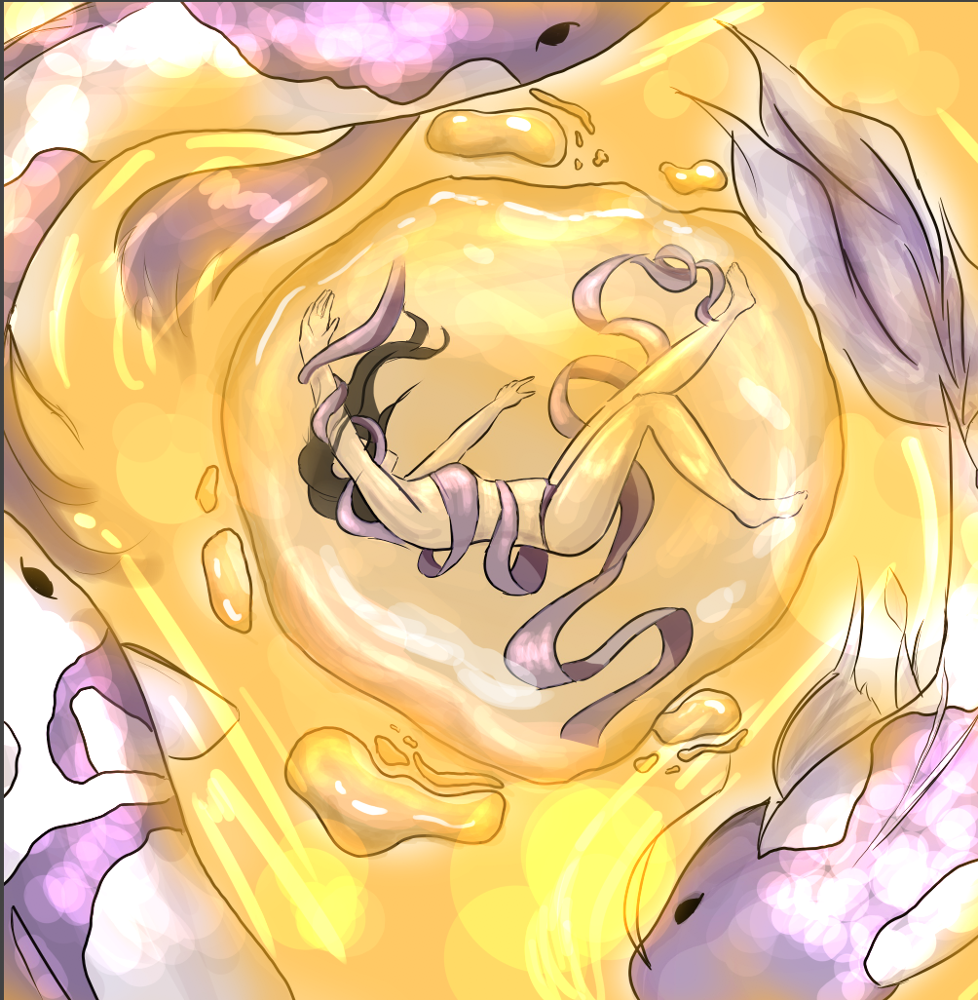
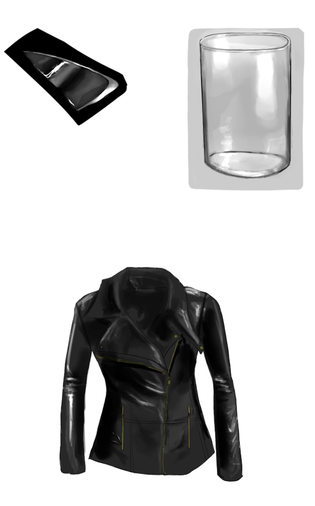
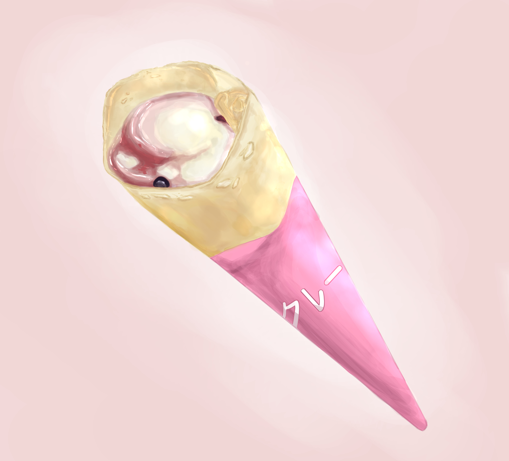

Hello,my name is Katelyn and this is a page about my passions and lifestyle(schooling,travel). I'm 14 years old and I will be attending OCSA this year.Orange County School of the Arts is an art school offering grades from 7-12. There are a variety of conservatories and the one that I applied for is Digital Media.
Here are a few of my drawings!
This piece was drawn just for fun for an instagram challenge! I decided to play with complimentary colors
This was just a study of different materials such as glass and leather to help me out with drawing more realisticly
For my final piece, this is based on a real picture that I took of a crepe that I decided to draw. I wanted to try and improve my texture skills and drawing things to appear more real.